# Estrutura geral
# ggplot(dados, aes(x = ..., y = ..., color = ..., fill = ...)) +
# geom_tipo() +
# outras_camadas()Visualização de Dados em R com ggplot2
UC: Aprendizagem Estatística · Universidade do Minho
Programa
- Importância da visualização
- Introdução ao ggplot2
- Estrutura básica (dados →
aes()→geoms) - Gráficos essenciais: dispersão, linhas, histograma, barras, boxplot, densidade, área
- Barras empilhadas e agrupadas
- Ajustamento linear e facetas
- Personalização e exportação
- Exemplo com
gapminder - Recursos adicionais
A importância da visualização
- Transforma dados complexos em informação compreensível.
- Facilita a identificação de padrões, tendências e valores atípicos.
- Exemplo inspirador (Hans Rosling):
https://www.youtube.com/watch?v=hVimVzgtD6w
Introdução ao ggplot2
- Pacote poderoso para visualização de dados em R.
- Baseado na Grammar of Graphics (Wickham em R; Wilkinson na formulação original).
- Permite criar gráficos de alta qualidade de forma flexível e reprodutível.
Estrutura básica do ggplot2
- Esqueleto:
aes()define as estéticas (mapeamentos para eixos, cor, etc.).- As camadas (geoms) adicionam elementos gráficos (pontos, linhas, barras, …).
Gráfico de dispersão (scatter)
Exemplo de código:
library(ggplot2)
# Dados de exemplo
dados <- data.frame(
altura = c(150, 160, 170, 180, 190),
peso = c( 55, 65, 75, 85, 95)
)
# Dispersão básico
ggplot(dados, aes(x = altura, y = peso)) +
geom_point()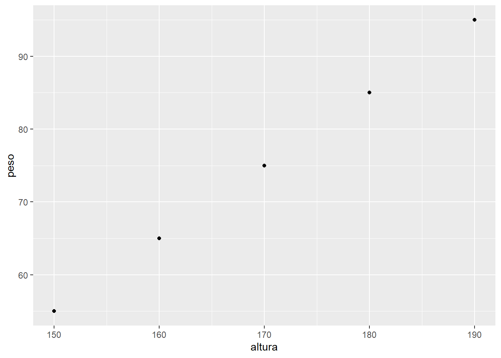
Explicação: geom_point() adiciona pontos; aes(x = altura, y = peso) mapeia variáveis aos eixos.
Gráfico de linhas
# Dados de exemplo
serie <- data.frame(
tempo = 1:10,
valor = c(3, 5, 2, 8, 7, 9, 4, 6, 5, 7)
)
# Linhas
ggplot(serie, aes(x = tempo, y = valor)) +
geom_line()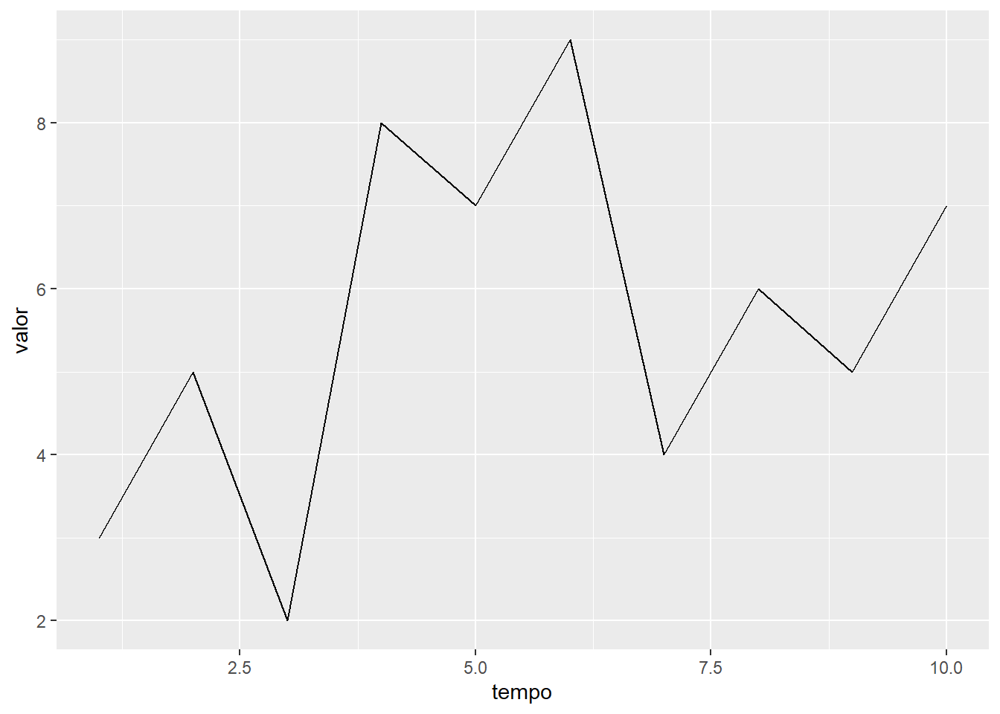
- Útil para tendências ao longo do tempo.
Histograma
# Dados de exemplo
notas <- data.frame(
classificacoes = c(7, 8, 5, 6, 9, 7, 8, 10, 6, 5)
)
# Histograma
ggplot(notas, aes(x = classificacoes)) +
geom_histogram(binwidth = 1, fill = "blue", color = "black")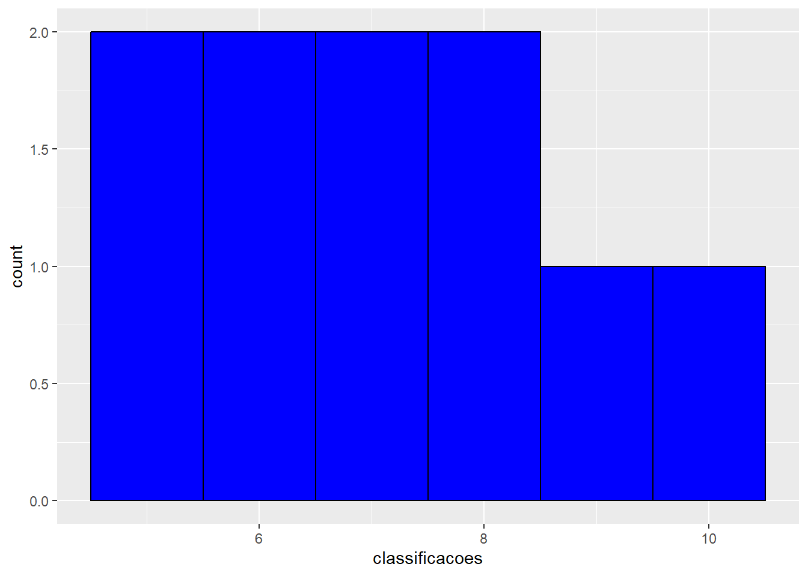
binwidthcontrola a largura das classes.
Gráfico de barras
# Dados de exemplo
cats <- data.frame(
categoria = c("A", "B", "C", "D"),
valores = c( 3 , 7 , 2 , 6 )
)
# Barras (valores já agregados)
ggplot(cats, aes(x = categoria, y = valores)) +
geom_bar(stat = "identity", fill = "orange", color = "black")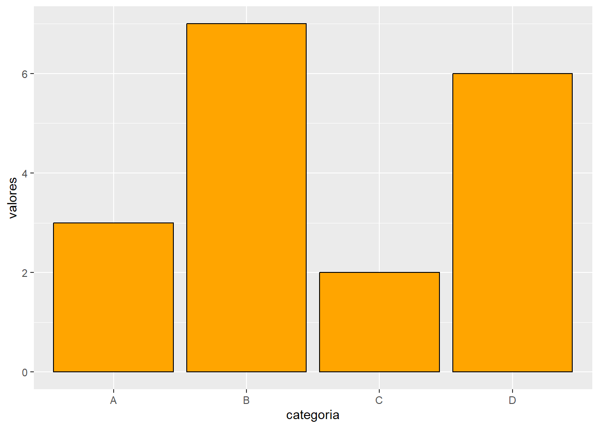
stat = "identity"usa os valores fornecidos.
Boxplot
# Dados de exemplo
grupos <- data.frame(
grupo = rep(c("G1", "G2"), each = 5),
valores = c(7, 8, 5, 6, 7, 8, 9, 6, 7, 8)
)
# Boxplot
ggplot(grupos, aes(x = grupo, y = valores)) +
geom_boxplot(fill = "green")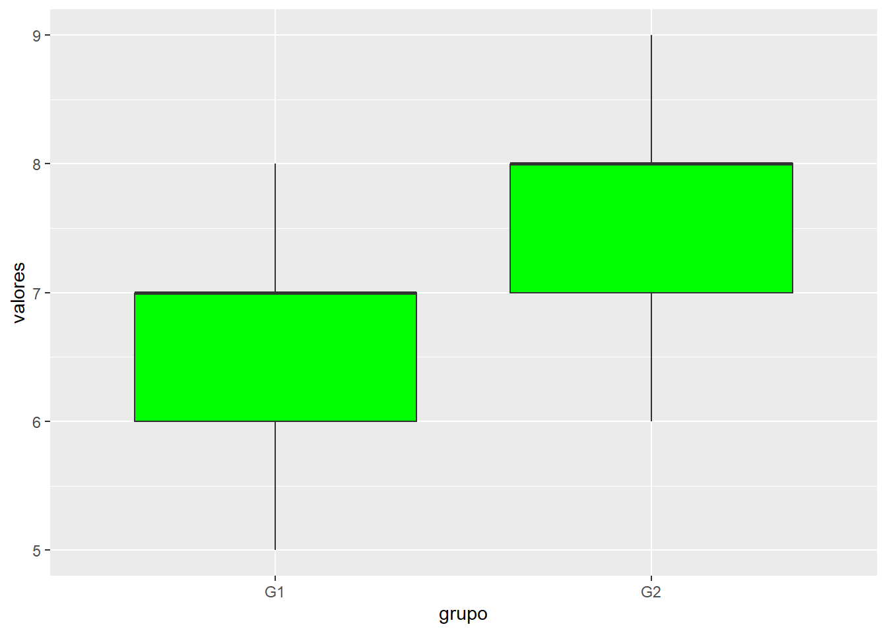
- Útil para comparar distribuições entre grupos.
Densidade
set.seed(1)
dens <- data.frame(
valores = c(rnorm(1000, mean = 0), rnorm(1000, mean = 3))
)
# Densidade
ggplot(dens, aes(x = valores)) +
geom_density(fill = "purple", alpha = 0.5)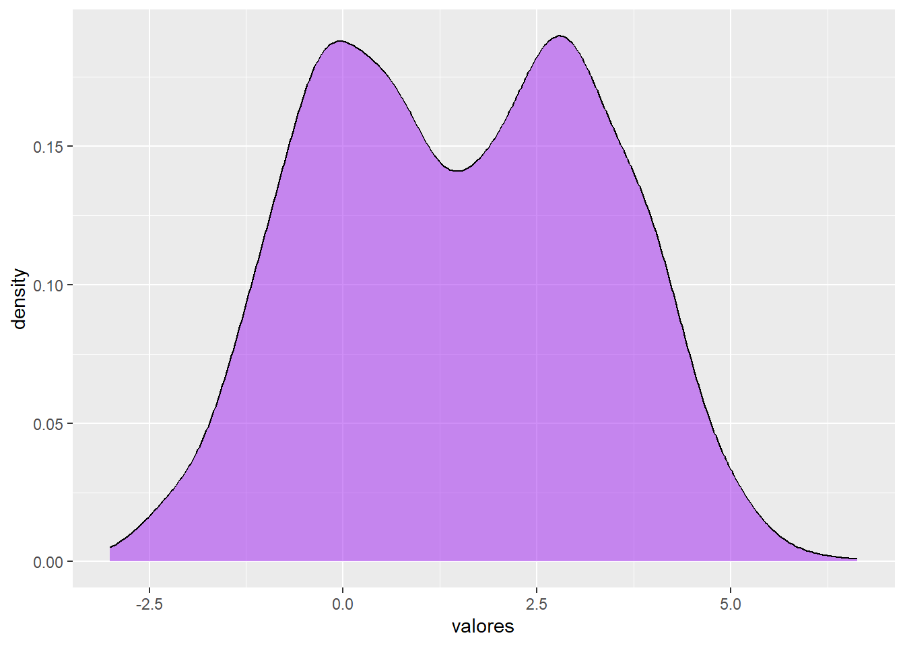
alphaajusta a transparência.
Área
# Dados de exemplo
area <- data.frame(
tempo = 1:10,
valor = c(3, 5, 2, 8, 7, 9, 4, 6, 5, 7)
)
# Área
ggplot(area, aes(x = tempo, y = valor)) +
geom_area(fill = "skyblue", alpha = 0.5)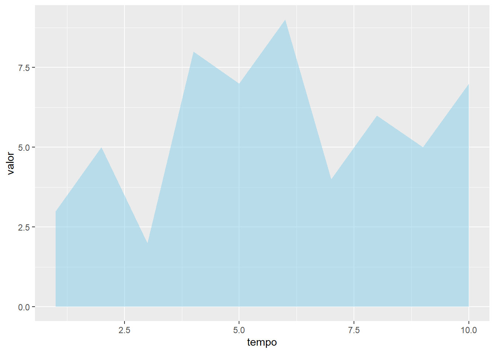
- Representa volume acumulado sob a curva.
Barras empilhadas
comp <- data.frame(
categoria = rep(c("A", "B", "C"), each = 3),
subcategoria = rep(c("X", "Y", "Z"), times = 3),
valores = c(5, 3, 4, 6, 2, 5, 4, 7, 3)
)
# Empilhadas
ggplot(comp, aes(x = categoria, y = valores, fill = subcategoria)) +
geom_bar(stat = "identity")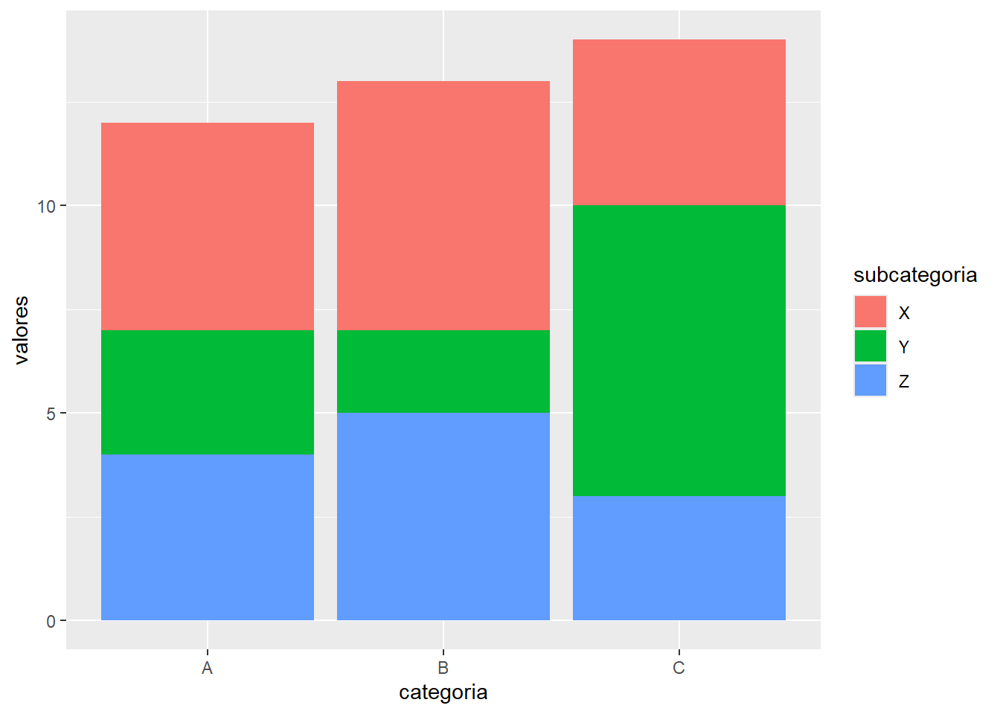
fill = subcategoriadefine o preenchimento por subcategoria.
Barras agrupadas
# Agrupadas (lado a lado)
ggplot(comp, aes(x = categoria, y = valores, fill = subcategoria)) +
geom_bar(stat = "identity", position = "dodge")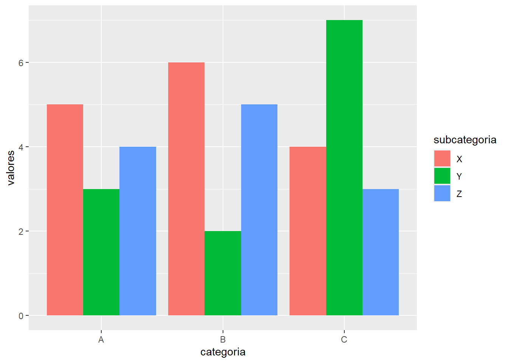
position = "dodge"coloca barras lado a lado.
Dispersão com ajustamento linear
set.seed(42)
reg <- data.frame(
x = rnorm(100),
y = rnorm(100)
)
# Dispersão + reta de regressão
ggplot(reg, aes(x = x, y = y)) +
geom_point() +
geom_smooth(method = "lm", se = FALSE, color = "red")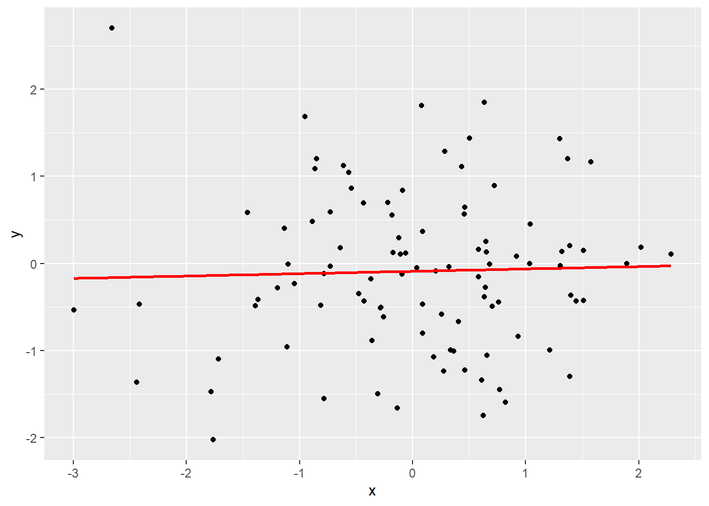
geom_smooth(method = "lm")adiciona tendência linear;se = FALSEremove a banda de confiança.
Facetas
set.seed(7)
fts <- data.frame(
x = rnorm(100),
y = rnorm(100),
grupo = sample(c("G1", "G2"), 100, replace = TRUE)
)
# Um painel por grupo
ggplot(fts, aes(x = x, y = y)) +
geom_point() +
facet_wrap(~ grupo)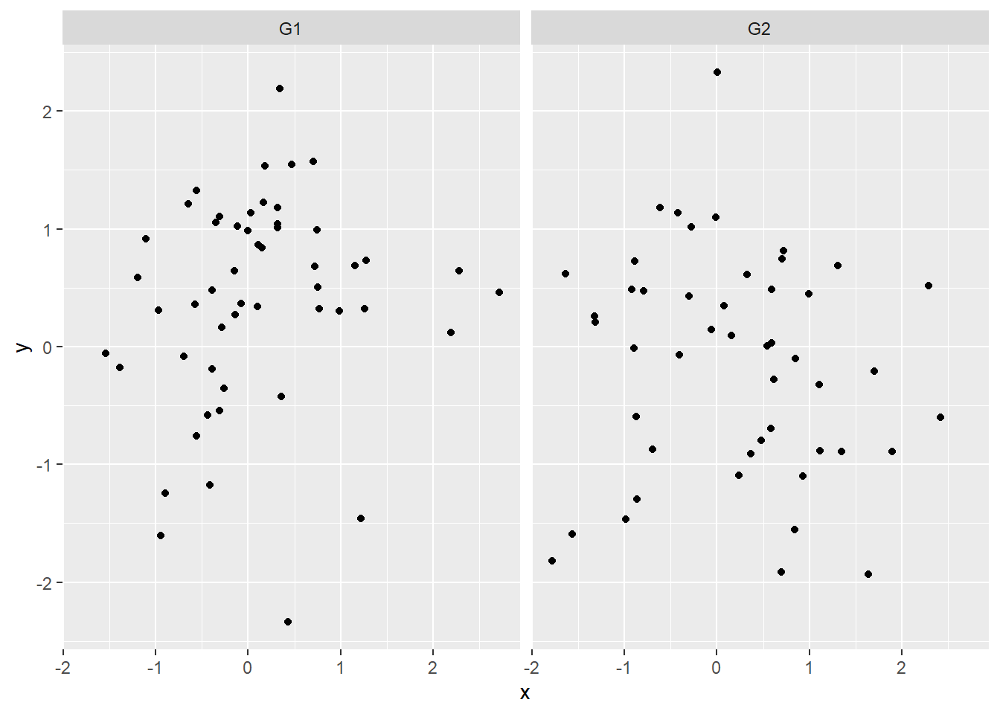
facet_wrap(~ grupo)cria um subgráfico por grupo.
Personalização (títulos, eixos, temas)
# Títulos e rótulos
ggplot(reg, aes(x = x, y = y)) +
geom_point() +
labs(title = "Título do Gráfico",
x = "Eixo X",
y = "Eixo Y")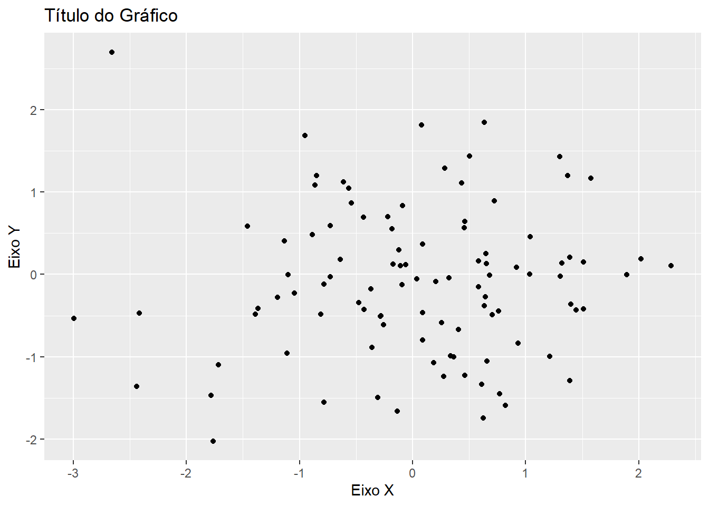
# Tema minimalista
ggplot(reg, aes(x = x, y = y)) +
geom_point() +
theme_minimal()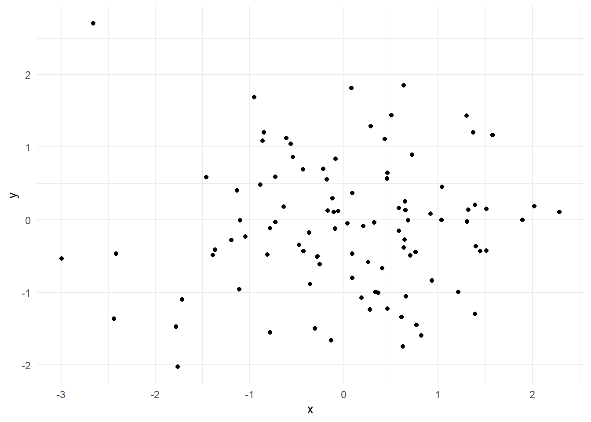
labs()define títulos e rótulos;theme_minimal()aplica um tema.
Guardar gráficos
# Guardar um gráfico em objeto
g <- ggplot(reg, aes(x = x, y = y)) + geom_point()
# Exportar para ficheiro
ggsave("meu_grafico.png", plot = g, width = 8, height = 6)ggsave()grava o gráfico; especifique nome e dimensões.
Exemplo prático: pacote gapminder
- Contém dados demográficos de vários países ao longo do tempo.
- Dados semelhantes aos usados nas apresentações de Hans Rosling.
- Vamos explorar
ggplot2com estes dados.
Instalação e carregamento
# Instalar (se necessário)
# install.packages("gapminder")
# Carregar pacotes
library(ggplot2)
library(gapminder)Esperança de vida ao longo do tempo
# Linhas por país (semi-transparente)
ggplot(gapminder, aes(x = year, y = lifeExp, group = country)) +
geom_line(alpha = 0.3) +
labs(title = "Esperança de vida ao longo do tempo",
x = "Ano",
y = "Esperança de vida")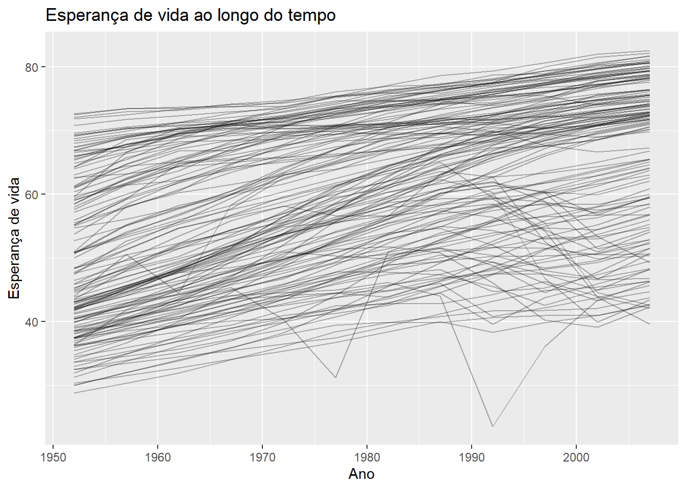
Destacar um país (Brasil)
# Todas as séries a cinzento + Brasil a azul
base <- ggplot(gapminder, aes(x = year, y = lifeExp, group = country)) +
geom_line(alpha = 0.3, color = "gray")
base +
geom_line(data = subset(gapminder, country == "Brazil"),
color = "blue", size = 1.2) +
labs(title = "Esperança de vida — Brasil em destaque",
x = "Ano", y = "Esperança de vida")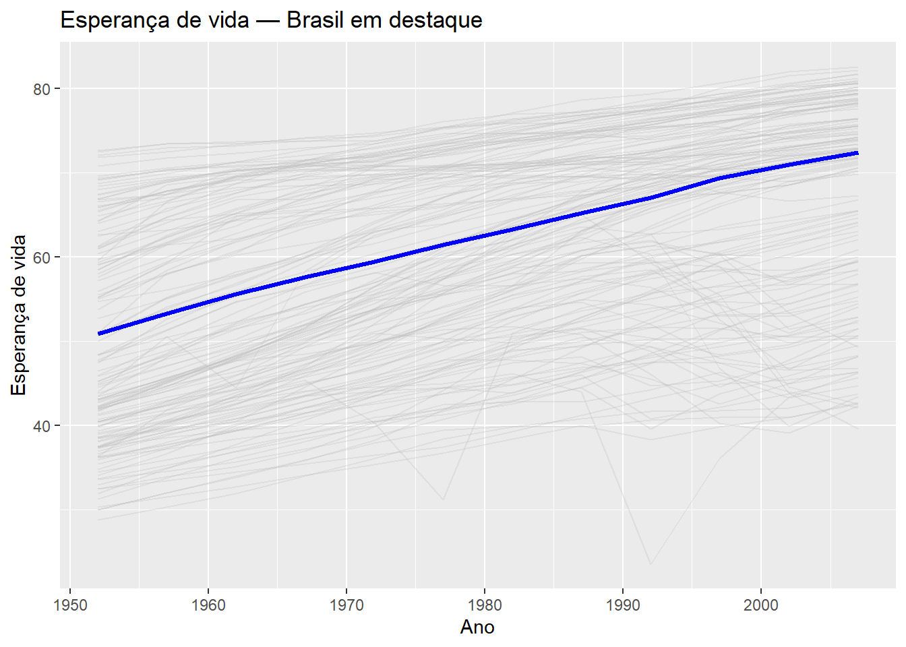
PIB per capita vs. esperança de vida
# Dispersão com escala log no eixo X
ggplot(gapminder, aes(x = gdpPercap, y = lifeExp, color = continent)) +
geom_point(alpha = 0.5) +
scale_x_log10() +
labs(title = "PIB per capita vs. Esperança de vida",
x = "PIB per capita (log)", y = "Esperança de vida",
color = "Continente")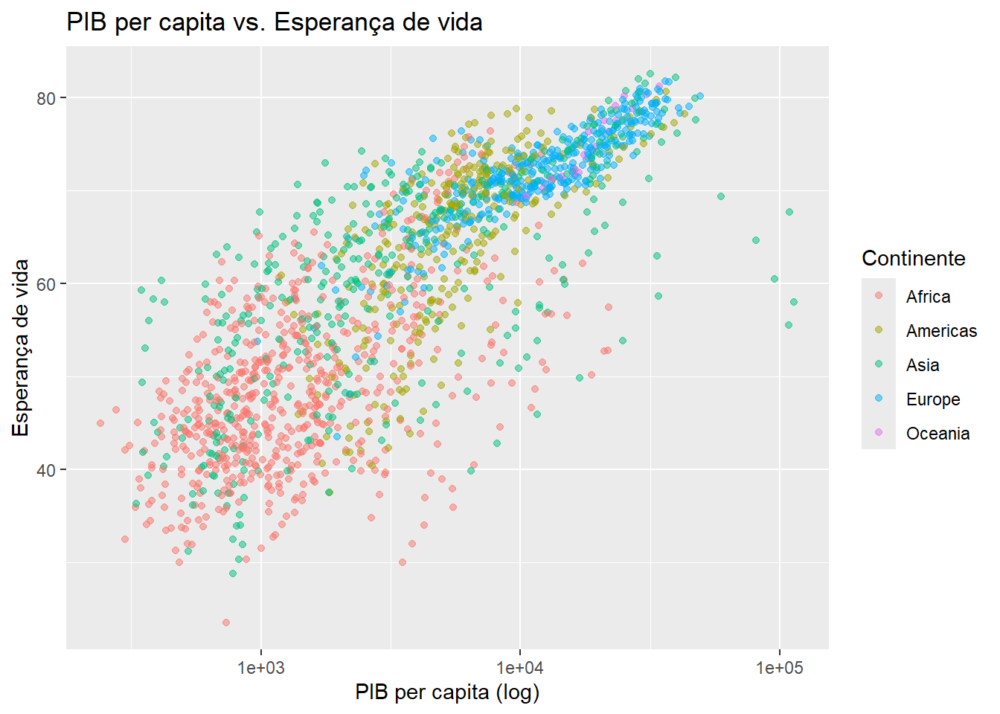
Facetas por continente
# Um painel por continente
ggplot(gapminder, aes(x = year, y = lifeExp)) +
geom_line(aes(group = country), alpha = 0.3) +
facet_wrap(~ continent) +
labs(title = "Esperança de vida por continente",
x = "Ano", y = "Esperança de vida")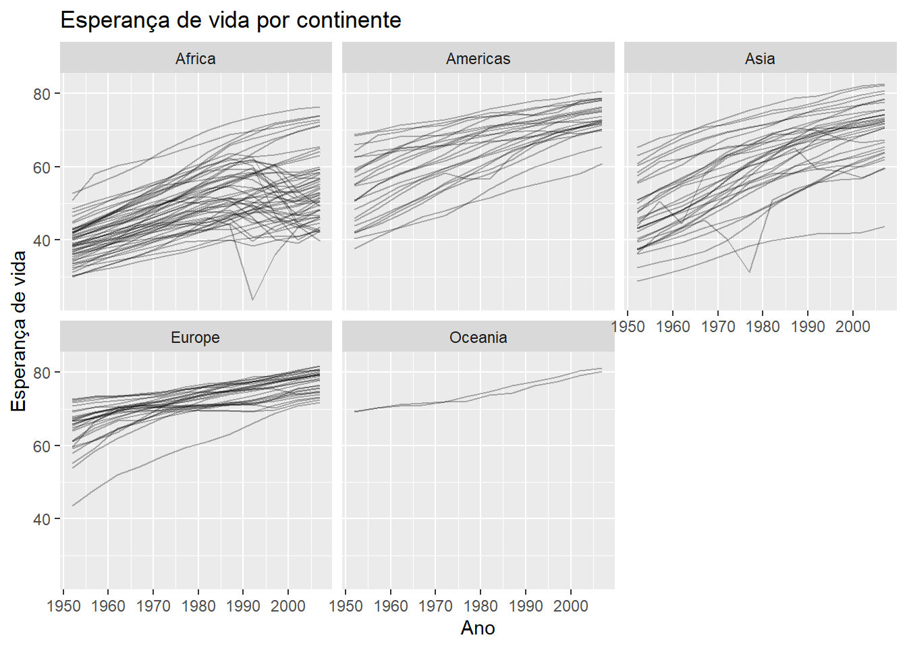
Recursos adicionais
- Documentação do ggplot2: https://ggplot2.tidyverse.org/
- Galeria de exemplos: https://www.r-graph-gallery.com/ggplot2-package
- Cheatsheet do ggplot2 (Posit/RStudio)
- Pacote gapminder: https://cran.r-project.org/package=gapminder